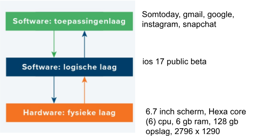

Er zijn drie gestapelde ‘lagen’ in de manier waarop de hard- en software van een apparaat samenwerken. Laten we de smartphone weer als voorbeeld nemen. Daarin zijn de volgende lagen aanwezig:
Deze laag bestaat uit de hardware die in een smartphone zit: van de accu tot en met het touchscreen.
bestaat uit software die de hardware aanstuurt. Deze software maakt het mogelijk om toepassingen (zoals apps) op het apparaat uit te voeren. Bij een smartphone bestaat de logische laag voornamelijk uit het besturingssysteem, bijvoorbeeld Android of iOS. We noemen dat een besturingssysteem omdat het de hardware bestuurt. Ook bepaalt het bijvoorbeeld wat apps mogen doen. .
bestaat uit allerlei software: de toepassingen of applicaties. Op een smartphone zijn dat de apps die kunnen worden geïnstalleerd vanuit de Play- of Appstore.
De onderdelen worden besproken in
Overige onderdelen 